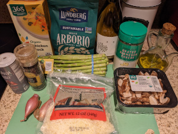
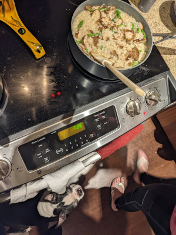
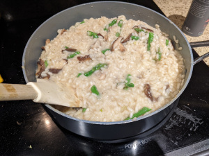

Risotto
  
Ingredients:
- Olive oil
- Shallots
- Arborio rice
- Chicken stock
- Salt and pepper
- Asparagos
- Mushrooms
- 1/2 cup White wine
- Parmesan cheese
How to make it:
- Heat oil in skilet (high)
- Add thinly cut shallots
- Add 1 lbs of rice
- Heat chicken stock in a pot (low)
- Slowly add stock to rice
- Add salt and pepper. Taste it every few minutes
- 22 min after adding the rice add asparagus
- after 5 min add mushrooms
- after 5 min add 1/2 cup of wine
- serve with cheese